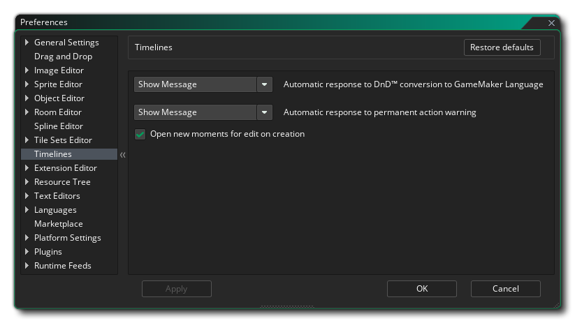

Die Timelines-Einstellungen werden verwendet, um bestimmte Eigenschaften für die Arbeit mit dem Timeline-Editor festzulegen. Die verfügbaren Optionen sind:
- Automatische Antwort auf DnD™ Konvertierung in GameMaker Sprache: Wenn Sie die rechte Maustaste drücken
 Menüoption auf einer Zeitleiste Moment, um Drag & Drop-Aktionen in Skript (Code) zu konvertieren, erhalten Sie eine Abfrage, ob Sie fortfahren möchten, da dies eine einseitige Konvertierung ist. Wenn Sie diese Option auf "OK" setzen, wird die Nachricht unterdrückt und die Konvertierung fortgesetzt, als ob Sie im Dialogfeld auf "OK" geklickt hätten. Die Standardeinstellung ist "Nachricht anzeigen".
Menüoption auf einer Zeitleiste Moment, um Drag & Drop-Aktionen in Skript (Code) zu konvertieren, erhalten Sie eine Abfrage, ob Sie fortfahren möchten, da dies eine einseitige Konvertierung ist. Wenn Sie diese Option auf "OK" setzen, wird die Nachricht unterdrückt und die Konvertierung fortgesetzt, als ob Sie im Dialogfeld auf "OK" geklickt hätten. Die Standardeinstellung ist "Nachricht anzeigen". - Automatische Antwort auf permanente Aktion Warnung: Bestimmte Aktionen innerhalb einer Zeitleiste können nicht rückgängig gemacht werden. Wenn dies der Fall ist, erhalten Sie eine Warnmeldung, in der Sie gefragt werden, ob Sie fortfahren möchten. Wenn Sie diese Option auf "OK" setzen, wird die Nachricht unterdrückt und die Aktion fortgesetzt, als ob Sie im Dialogfeld auf "OK" geklickt hätten. Die Standardeinstellung ist "Nachricht anzeigen".
- Öffne neue Momente für die Bearbeitung bei der Erstellung: Normalerweise fügt GameMaker Studio 2 automatisch einen Editor hinzu, in dem du deinen Code hinzufügst oder ihn per Drag & Drop hinzufügst, wenn du einen neuen Moment hinzufügst. Wenn Sie diese Option jedoch deaktivieren, wird der Moment hinzugefügt, ohne den Editor zu öffnen (Sie können ihn durch Doppelklick öffnen
 in dem Moment). Standardmäßig ist diese Option aktiviert.
in dem Moment). Standardmäßig ist diese Option aktiviert.